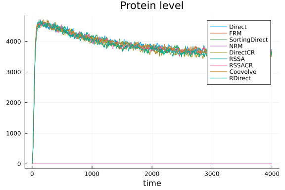
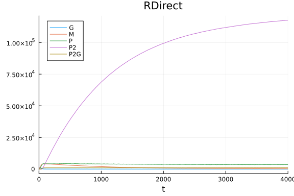
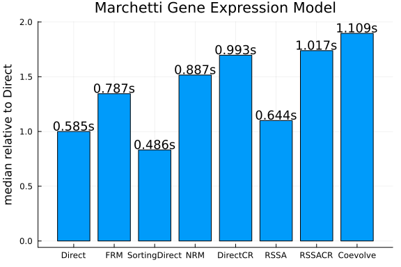

Negative Feedback Marchetti Model
using OrdinaryDiffEq, Catalyst, JumpProcesses, JumpProblemLibrary, Plots, Statistics
fmt = :png:pngModel and example solutions
Here we implement the gene expression model from appendix A.6 of Marchetti, Priami and Thanh, Simulation Algorithms for Comptuational Systems Biology, Springer (2017).
jprob = JumpProblemLibrary.prob_jump_dnadimer_repressor
rnpar = jprob.rates
u0 = jprob.u0
tf = jprob.tstop
rn = jprob.network
reactions(rn)8-element Vector{Catalyst.Reaction}:
c1, G --> G + M
c2, M --> M + P
c3, M --> ∅
c4, P --> ∅
c5, 2*P --> P2
c6, P2 --> 2*P
c7, P2 + G --> P2G
c8, P2G --> P2 + Gu0f = [1000., 0., 0., 0., 0.]
odeprob = ODEProblem(rn, u0f, (0.,tf), rnpar)
solution = solve(odeprob, Tsit5())
plot(solution, format=fmt)
tf = 4000.
methods = (Direct(), FRM(), SortingDirect(), NRM(), DirectCR(), RSSA(), RSSACR(), Coevolve(), RDirect())
shortlabels = [string(leg)[15:end-2] for leg in methods]
prob = prob = DiscreteProblem(rn, u0, (0.0, tf), rnpar)
ploth = plot(reuse=false)
p = []
for (i,method) in enumerate(methods)
jump_prob = JumpProblem(rn, prob, method, save_positions=(false, false))
sol = solve(jump_prob, SSAStepper(), saveat=tf/1000.)
plot!(ploth, sol.t, sol[3,:], label=shortlabels[i], format=fmt)
push!(p, plot(sol, title=shortlabels[i], format=fmt))
end
plot(ploth, title="Protein level", xlabel="time", format=fmt)
plot(p[end])
Benchmarking performance of the methods
function run_benchmark!(t, jump_prob, stepper)
sol = solve(jump_prob, stepper)
@inbounds for i in 1:length(t)
t[i] = @elapsed (sol = solve(jump_prob, stepper))
end
endrun_benchmark! (generic function with 1 method)nsims = 200
benchmarks = Vector{Vector{Float64}}()
for method in methods
jump_prob = JumpProblem(rn, prob, method, save_positions=(false, false))
stepper = SSAStepper()
t = Vector{Float64}(undef, nsims)
run_benchmark!(t, jump_prob, stepper)
push!(benchmarks, t)
endmedtimes = Vector{Float64}(undef, length(methods))
stdtimes = Vector{Float64}(undef, length(methods))
avgtimes = Vector{Float64}(undef, length(methods))
for i in 1:length(methods)
medtimes[i] = median(benchmarks[i])
avgtimes[i] = mean(benchmarks[i])
stdtimes[i] = std(benchmarks[i])
end
using DataFrames
df = DataFrame(names=shortlabels, medtimes=medtimes, relmedtimes=(medtimes/medtimes[1]),
avgtimes=avgtimes, std=stdtimes, cv=stdtimes./avgtimes)
sa = [text(string(round(mt,digits=3),"s"),:center,12) for mt in df.medtimes]
bar(df.names,df.relmedtimes,legend=:false, fmt=fmt)
scatter!(df.names, .05 .+ df.relmedtimes, markeralpha=0, series_annotations=sa, fmt=fmt)
ylabel!("median relative to Direct")
title!("Marchetti Gene Expression Model")
Appendix
These benchmarks are a part of the SciMLBenchmarks.jl repository, found at: https://github.com/SciML/SciMLBenchmarks.jl. For more information on high-performance scientific machine learning, check out the SciML Open Source Software Organization https://sciml.ai.
To locally run this benchmark, do the following commands:
using SciMLBenchmarks
SciMLBenchmarks.weave_file("benchmarks/Jumps","NegFeedback_GeneExpr_Marchetti.jmd")Computer Information:
Julia Version 1.9.4
Commit 8e5136fa297 (2023-11-14 08:46 UTC)
Build Info:
Official https://julialang.org/ release
Platform Info:
OS: Linux (x86_64-linux-gnu)
CPU: 128 × AMD EPYC 7502 32-Core Processor
WORD_SIZE: 64
LIBM: libopenlibm
LLVM: libLLVM-14.0.6 (ORCJIT, znver2)
Threads: 128 on 128 virtual cores
Environment:
JULIA_CPU_THREADS = 128
JULIA_DEPOT_PATH = /cache/julia-buildkite-plugin/depots/5b300254-1738-4989-ae0a-f4d2d937f953
JULIA_IMAGE_THREADS = 1
Package Information:
Status `/cache/build/exclusive-amdci3-0/julialang/scimlbenchmarks-dot-jl/benchmarks/Jumps/Project.toml`
[6e4b80f9] BenchmarkTools v1.4.0
[479239e8] Catalyst v13.5.1
[8f4d0f93] Conda v1.10.0
[a93c6f00] DataFrames v1.6.1
⌃ [0c46a032] DifferentialEquations v7.10.0
[31c24e10] Distributions v0.25.103
[86223c79] Graphs v1.9.0
[faf0f6d7] JumpProblemLibrary v0.1.4
[ccbc3e58] JumpProcesses v9.9.0
⌃ [961ee093] ModelingToolkit v8.70.0
⌃ [1dea7af3] OrdinaryDiffEq v6.58.2
[86206cdf] PiecewiseDeterministicMarkovProcesses v0.0.7
[91a5bcdd] Plots v1.39.0
[438e738f] PyCall v1.96.2
[31c91b34] SciMLBenchmarks v0.1.3
[c3572dad] Sundials v4.20.1
[37e2e46d] LinearAlgebra
[9a3f8284] Random
[10745b16] Statistics v1.9.0
Info Packages marked with ⌃ have new versions available and may be upgradable.And the full manifest:
Status `/cache/build/exclusive-amdci3-0/julialang/scimlbenchmarks-dot-jl/benchmarks/Jumps/Manifest.toml`
[47edcb42] ADTypes v0.2.5
⌅ [c3fe647b] AbstractAlgebra v0.33.0
[1520ce14] AbstractTrees v0.4.4
[79e6a3ab] Adapt v3.7.1
[ec485272] ArnoldiMethod v0.2.0
[4fba245c] ArrayInterface v7.6.1
[4c555306] ArrayLayouts v1.4.3
⌅ [aae01518] BandedMatrices v0.17.38
[6e4b80f9] BenchmarkTools v1.4.0
[e2ed5e7c] Bijections v0.1.6
[d1d4a3ce] BitFlags v0.1.8
[62783981] BitTwiddlingConvenienceFunctions v0.1.5
⌅ [764a87c0] BoundaryValueDiffEq v4.0.1
[fa961155] CEnum v0.5.0
[2a0fbf3d] CPUSummary v0.2.4
[00ebfdb7] CSTParser v3.3.6
[49dc2e85] Calculus v0.5.1
[479239e8] Catalyst v13.5.1
[d360d2e6] ChainRulesCore v1.18.0
[fb6a15b2] CloseOpenIntervals v0.1.12
[944b1d66] CodecZlib v0.7.3
[35d6a980] ColorSchemes v3.24.0
[3da002f7] ColorTypes v0.11.4
[c3611d14] ColorVectorSpace v0.10.0
[5ae59095] Colors v0.12.10
[861a8166] Combinatorics v1.0.2
[a80b9123] CommonMark v0.8.12
[38540f10] CommonSolve v0.2.4
[bbf7d656] CommonSubexpressions v0.3.0
[34da2185] Compat v4.10.1
[b152e2b5] CompositeTypes v0.1.3
[2569d6c7] ConcreteStructs v0.2.3
[f0e56b4a] ConcurrentUtilities v2.3.0
[8f4d0f93] Conda v1.10.0
[187b0558] ConstructionBase v1.5.4
[d38c429a] Contour v0.6.2
[adafc99b] CpuId v0.3.1
[a8cc5b0e] Crayons v4.1.1
[9a962f9c] DataAPI v1.15.0
[a93c6f00] DataFrames v1.6.1
[864edb3b] DataStructures v0.18.15
[e2d170a0] DataValueInterfaces v1.0.0
[bcd4f6db] DelayDiffEq v5.43.1
[8bb1440f] DelimitedFiles v1.9.1
⌃ [2b5f629d] DiffEqBase v6.130.0
[459566f4] DiffEqCallbacks v2.34.0
[77a26b50] DiffEqNoiseProcess v5.19.0
[163ba53b] DiffResults v1.1.0
[b552c78f] DiffRules v1.15.1
⌃ [0c46a032] DifferentialEquations v7.10.0
[b4f34e82] Distances v0.10.11
[31c24e10] Distributions v0.25.103
[ffbed154] DocStringExtensions v0.9.3
⌅ [5b8099bc] DomainSets v0.6.7
[fa6b7ba4] DualNumbers v0.6.8
[7c1d4256] DynamicPolynomials v0.5.3
[4e289a0a] EnumX v1.0.4
[f151be2c] EnzymeCore v0.6.4
[460bff9d] ExceptionUnwrapping v0.1.9
[d4d017d3] ExponentialUtilities v1.25.0
[e2ba6199] ExprTools v0.1.10
[c87230d0] FFMPEG v0.4.1
[7034ab61] FastBroadcast v0.2.8
[9aa1b823] FastClosures v0.3.2
[29a986be] FastLapackInterface v2.0.0
[1a297f60] FillArrays v1.9.1
[6a86dc24] FiniteDiff v2.21.1
[53c48c17] FixedPointNumbers v0.8.4
[59287772] Formatting v0.4.2
[f6369f11] ForwardDiff v0.10.36
[069b7b12] FunctionWrappers v1.1.3
[77dc65aa] FunctionWrappersWrappers v0.1.3
[d9f16b24] Functors v0.4.5
[46192b85] GPUArraysCore v0.1.5
[28b8d3ca] GR v0.72.10
[c145ed77] GenericSchur v0.5.3
[d7ba0133] Git v1.3.0
[c27321d9] Glob v1.3.1
[86223c79] Graphs v1.9.0
[42e2da0e] Grisu v1.0.2
[0b43b601] Groebner v0.5.0
[d5909c97] GroupsCore v0.4.0
[cd3eb016] HTTP v1.10.1
[eafb193a] Highlights v0.5.2
[3e5b6fbb] HostCPUFeatures v0.1.16
[34004b35] HypergeometricFunctions v0.3.23
[7073ff75] IJulia v1.24.2
[615f187c] IfElse v0.1.1
[d25df0c9] Inflate v0.1.4
[842dd82b] InlineStrings v1.4.0
[18e54dd8] IntegerMathUtils v0.1.2
[8197267c] IntervalSets v0.7.8
[41ab1584] InvertedIndices v1.3.0
[92d709cd] IrrationalConstants v0.2.2
[82899510] IteratorInterfaceExtensions v1.0.0
[1019f520] JLFzf v0.1.7
[692b3bcd] JLLWrappers v1.5.0
[682c06a0] JSON v0.21.4
[98e50ef6] JuliaFormatter v1.0.43
[faf0f6d7] JumpProblemLibrary v0.1.4
[ccbc3e58] JumpProcesses v9.9.0
[ef3ab10e] KLU v0.4.1
[ba0b0d4f] Krylov v0.9.4
[7f56f5a3] LSODA v0.7.5
[b964fa9f] LaTeXStrings v1.3.1
[2ee39098] LabelledArrays v1.14.0
[984bce1d] LambertW v0.4.6
[23fbe1c1] Latexify v0.16.1
[10f19ff3] LayoutPointers v0.1.15
[50d2b5c4] Lazy v0.15.1
[2d8b4e74] LevyArea v1.0.0
[d3d80556] LineSearches v7.2.0
⌃ [7ed4a6bd] LinearSolve v2.10.0
[2ab3a3ac] LogExpFunctions v0.3.26
[e6f89c97] LoggingExtras v1.0.3
[bdcacae8] LoopVectorization v0.12.166
[d8e11817] MLStyle v0.4.17
[1914dd2f] MacroTools v0.5.11
[d125e4d3] ManualMemory v0.1.8
[739be429] MbedTLS v1.1.9
[442fdcdd] Measures v0.3.2
[e1d29d7a] Missings v1.1.0
⌃ [961ee093] ModelingToolkit v8.70.0
[46d2c3a1] MuladdMacro v0.2.4
[102ac46a] MultivariatePolynomials v0.5.3
[ffc61752] Mustache v1.0.19
[d8a4904e] MutableArithmetics v1.4.0
[d41bc354] NLSolversBase v7.8.3
[2774e3e8] NLsolve v4.5.1
[77ba4419] NaNMath v1.0.2
⌅ [8913a72c] NonlinearSolve v1.10.1
[6fe1bfb0] OffsetArrays v1.12.10
[4d8831e6] OpenSSL v1.4.1
[429524aa] Optim v1.7.8
[bac558e1] OrderedCollections v1.6.3
⌃ [1dea7af3] OrdinaryDiffEq v6.58.2
[90014a1f] PDMats v0.11.30
[65ce6f38] PackageExtensionCompat v1.0.2
[d96e819e] Parameters v0.12.3
[69de0a69] Parsers v2.8.0
[86206cdf] PiecewiseDeterministicMarkovProcesses v0.0.7
[b98c9c47] Pipe v1.3.0
[ccf2f8ad] PlotThemes v3.1.0
[995b91a9] PlotUtils v1.3.5
[91a5bcdd] Plots v1.39.0
[e409e4f3] PoissonRandom v0.4.4
[f517fe37] Polyester v0.7.9
[1d0040c9] PolyesterWeave v0.2.1
[2dfb63ee] PooledArrays v1.4.3
[85a6dd25] PositiveFactorizations v0.2.4
[d236fae5] PreallocationTools v0.4.12
[aea7be01] PrecompileTools v1.2.0
[21216c6a] Preferences v1.4.1
[08abe8d2] PrettyTables v2.3.1
[27ebfcd6] Primes v0.5.5
[438e738f] PyCall v1.96.2
[1fd47b50] QuadGK v2.9.1
[74087812] Random123 v1.6.1
[fb686558] RandomExtensions v0.4.4
[e6cf234a] RandomNumbers v1.5.3
[3cdcf5f2] RecipesBase v1.3.4
[01d81517] RecipesPipeline v0.6.12
[731186ca] RecursiveArrayTools v2.38.10
[f2c3362d] RecursiveFactorization v0.2.21
[189a3867] Reexport v1.2.2
[05181044] RelocatableFolders v1.0.1
[ae029012] Requires v1.3.0
[ae5879a3] ResettableStacks v1.1.1
[79098fc4] Rmath v0.7.1
[7e49a35a] RuntimeGeneratedFunctions v0.5.12
[fdea26ae] SIMD v3.4.6
[94e857df] SIMDTypes v0.1.0
[476501e8] SLEEFPirates v0.6.42
⌅ [0bca4576] SciMLBase v1.98.1
[31c91b34] SciMLBenchmarks v0.1.3
[e9a6253c] SciMLNLSolve v0.1.9
[c0aeaf25] SciMLOperators v0.3.7
[6c6a2e73] Scratch v1.2.1
[91c51154] SentinelArrays v1.4.1
[efcf1570] Setfield v1.1.1
[992d4aef] Showoff v1.0.3
[777ac1f9] SimpleBufferStream v1.1.0
⌅ [727e6d20] SimpleNonlinearSolve v0.1.23
[699a6c99] SimpleTraits v0.9.4
[ce78b400] SimpleUnPack v1.1.0
[b85f4697] SoftGlobalScope v1.1.0
[a2af1166] SortingAlgorithms v1.2.0
[47a9eef4] SparseDiffTools v2.13.0
[e56a9233] Sparspak v0.3.9
[276daf66] SpecialFunctions v2.3.1
[aedffcd0] Static v0.8.8
[0d7ed370] StaticArrayInterface v1.4.1
[90137ffa] StaticArrays v1.7.0
[1e83bf80] StaticArraysCore v1.4.2
[82ae8749] StatsAPI v1.7.0
⌅ [2913bbd2] StatsBase v0.33.21
[4c63d2b9] StatsFuns v1.3.0
⌅ [9672c7b4] SteadyStateDiffEq v1.16.1
⌃ [789caeaf] StochasticDiffEq v6.62.0
[7792a7ef] StrideArraysCore v0.5.2
[69024149] StringEncodings v0.3.7
[892a3eda] StringManipulation v0.3.4
[c3572dad] Sundials v4.20.1
[2efcf032] SymbolicIndexingInterface v0.2.2
[d1185830] SymbolicUtils v1.4.0
[0c5d862f] Symbolics v5.11.0
[3783bdb8] TableTraits v1.0.1
[bd369af6] Tables v1.11.1
[62fd8b95] TensorCore v0.1.1
[8290d209] ThreadingUtilities v0.5.2
[a759f4b9] TimerOutputs v0.5.23
[0796e94c] Tokenize v0.5.26
[3bb67fe8] TranscodingStreams v0.10.2
[d5829a12] TriangularSolve v0.1.20
[410a4b4d] Tricks v0.1.8
[781d530d] TruncatedStacktraces v1.4.0
[5c2747f8] URIs v1.5.1
[3a884ed6] UnPack v1.0.2
[1cfade01] UnicodeFun v0.4.1
[1986cc42] Unitful v1.19.0
[45397f5d] UnitfulLatexify v1.6.3
[a7c27f48] Unityper v0.1.5
[41fe7b60] Unzip v0.2.0
[3d5dd08c] VectorizationBase v0.21.65
[81def892] VersionParsing v1.3.0
[19fa3120] VertexSafeGraphs v0.2.0
[44d3d7a6] Weave v0.10.12
[ddb6d928] YAML v0.4.9
[c2297ded] ZMQ v1.2.2
[700de1a5] ZygoteRules v0.2.4
[6e34b625] Bzip2_jll v1.0.8+0
[83423d85] Cairo_jll v1.16.1+1
[2702e6a9] EpollShim_jll v0.0.20230411+0
[2e619515] Expat_jll v2.5.0+0
[b22a6f82] FFMPEG_jll v4.4.4+1
[a3f928ae] Fontconfig_jll v2.13.93+0
[d7e528f0] FreeType2_jll v2.13.1+0
[559328eb] FriBidi_jll v1.0.10+0
[0656b61e] GLFW_jll v3.3.8+0
[d2c73de3] GR_jll v0.72.10+0
[78b55507] Gettext_jll v0.21.0+0
[f8c6e375] Git_jll v2.42.0+0
[7746bdde] Glib_jll v2.76.5+0
[3b182d85] Graphite2_jll v1.3.14+0
[2e76f6c2] HarfBuzz_jll v2.8.1+1
[1d5cc7b8] IntelOpenMP_jll v2024.0.0+0
[aacddb02] JpegTurbo_jll v2.1.91+0
[c1c5ebd0] LAME_jll v3.100.1+0
[88015f11] LERC_jll v3.0.0+1
[1d63c593] LLVMOpenMP_jll v15.0.4+0
[aae0fff6] LSODA_jll v0.1.2+0
[dd4b983a] LZO_jll v2.10.1+0
⌅ [e9f186c6] Libffi_jll v3.2.2+1
[d4300ac3] Libgcrypt_jll v1.8.7+0
[7e76a0d4] Libglvnd_jll v1.6.0+0
[7add5ba3] Libgpg_error_jll v1.42.0+0
[94ce4f54] Libiconv_jll v1.17.0+0
[4b2f31a3] Libmount_jll v2.35.0+0
[89763e89] Libtiff_jll v4.5.1+1
[38a345b3] Libuuid_jll v2.36.0+0
[856f044c] MKL_jll v2024.0.0+0
[e7412a2a] Ogg_jll v1.3.5+1
[458c3c95] OpenSSL_jll v3.0.12+0
[efe28fd5] OpenSpecFun_jll v0.5.5+0
[91d4177d] Opus_jll v1.3.2+0
[30392449] Pixman_jll v0.42.2+0
[c0090381] Qt6Base_jll v6.5.3+1
[f50d1b31] Rmath_jll v0.4.0+0
⌅ [fb77eaff] Sundials_jll v5.2.1+0
[a44049a8] Vulkan_Loader_jll v1.3.243+0
[a2964d1f] Wayland_jll v1.21.0+1
[2381bf8a] Wayland_protocols_jll v1.25.0+0
[02c8fc9c] XML2_jll v2.12.0+0
[aed1982a] XSLT_jll v1.1.34+0
[ffd25f8a] XZ_jll v5.4.5+0
[f67eecfb] Xorg_libICE_jll v1.0.10+1
[c834827a] Xorg_libSM_jll v1.2.3+0
[4f6342f7] Xorg_libX11_jll v1.8.6+0
[0c0b7dd1] Xorg_libXau_jll v1.0.11+0
[935fb764] Xorg_libXcursor_jll v1.2.0+4
[a3789734] Xorg_libXdmcp_jll v1.1.4+0
[1082639a] Xorg_libXext_jll v1.3.4+4
[d091e8ba] Xorg_libXfixes_jll v5.0.3+4
[a51aa0fd] Xorg_libXi_jll v1.7.10+4
[d1454406] Xorg_libXinerama_jll v1.1.4+4
[ec84b674] Xorg_libXrandr_jll v1.5.2+4
[ea2f1a96] Xorg_libXrender_jll v0.9.10+4
[14d82f49] Xorg_libpthread_stubs_jll v0.1.1+0
[c7cfdc94] Xorg_libxcb_jll v1.15.0+0
[cc61e674] Xorg_libxkbfile_jll v1.1.2+0
[e920d4aa] Xorg_xcb_util_cursor_jll v0.1.4+0
[12413925] Xorg_xcb_util_image_jll v0.4.0+1
[2def613f] Xorg_xcb_util_jll v0.4.0+1
[975044d2] Xorg_xcb_util_keysyms_jll v0.4.0+1
[0d47668e] Xorg_xcb_util_renderutil_jll v0.3.9+1
[c22f9ab0] Xorg_xcb_util_wm_jll v0.4.1+1
[35661453] Xorg_xkbcomp_jll v1.4.6+0
[33bec58e] Xorg_xkeyboard_config_jll v2.39.0+0
[c5fb5394] Xorg_xtrans_jll v1.5.0+0
[8f1865be] ZeroMQ_jll v4.3.4+0
[3161d3a3] Zstd_jll v1.5.5+0
[35ca27e7] eudev_jll v3.2.9+0
[214eeab7] fzf_jll v0.43.0+0
[1a1c6b14] gperf_jll v3.1.1+0
[a4ae2306] libaom_jll v3.4.0+0
[0ac62f75] libass_jll v0.15.1+0
[2db6ffa8] libevdev_jll v1.11.0+0
[f638f0a6] libfdk_aac_jll v2.0.2+0
[36db933b] libinput_jll v1.18.0+0
[b53b4c65] libpng_jll v1.6.38+0
[a9144af2] libsodium_jll v1.0.20+0
[f27f6e37] libvorbis_jll v1.3.7+1
[009596ad] mtdev_jll v1.1.6+0
[1270edf5] x264_jll v2021.5.5+0
[dfaa095f] x265_jll v3.5.0+0
[d8fb68d0] xkbcommon_jll v1.4.1+1
[0dad84c5] ArgTools v1.1.1
[56f22d72] Artifacts
[2a0f44e3] Base64
[ade2ca70] Dates
[8ba89e20] Distributed
[f43a241f] Downloads v1.6.0
[7b1f6079] FileWatching
[9fa8497b] Future
[b77e0a4c] InteractiveUtils
[4af54fe1] LazyArtifacts
[b27032c2] LibCURL v0.6.4
[76f85450] LibGit2
[8f399da3] Libdl
[37e2e46d] LinearAlgebra
[56ddb016] Logging
[d6f4376e] Markdown
[a63ad114] Mmap
[ca575930] NetworkOptions v1.2.0
[44cfe95a] Pkg v1.9.2
[de0858da] Printf
[9abbd945] Profile
[3fa0cd96] REPL
[9a3f8284] Random
[ea8e919c] SHA v0.7.0
[9e88b42a] Serialization
[1a1011a3] SharedArrays
[6462fe0b] Sockets
[2f01184e] SparseArrays
[10745b16] Statistics v1.9.0
[4607b0f0] SuiteSparse
[fa267f1f] TOML v1.0.3
[a4e569a6] Tar v1.10.0
[8dfed614] Test
[cf7118a7] UUIDs
[4ec0a83e] Unicode
[e66e0078] CompilerSupportLibraries_jll v1.0.5+0
[deac9b47] LibCURL_jll v8.4.0+0
[29816b5a] LibSSH2_jll v1.11.0+1
[c8ffd9c3] MbedTLS_jll v2.28.2+0
[14a3606d] MozillaCACerts_jll v2022.10.11
[4536629a] OpenBLAS_jll v0.3.21+4
[05823500] OpenLibm_jll v0.8.1+0
[efcefdf7] PCRE2_jll v10.42.0+0
[bea87d4a] SuiteSparse_jll v5.10.1+6
[83775a58] Zlib_jll v1.2.13+0
[8e850b90] libblastrampoline_jll v5.8.0+0
[8e850ede] nghttp2_jll v1.52.0+1
[3f19e933] p7zip_jll v17.4.0+0
Info Packages marked with ⌃ and ⌅ have new versions available. Those with ⌃ may be upgradable, but those with ⌅ are restricted by compatibility constraints from upgrading. To see why use `status --outdated -m`